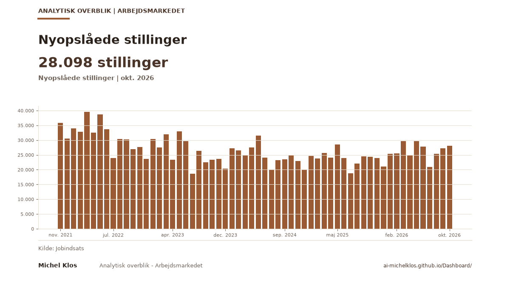

Nyopslåede stillinger
28.098 stillinger | Nyopslåede stillinger | okt. 2026. Se grafen i Analytisk overblik - Arbejdsmarkedet.

28.098 stillinger | Nyopslåede stillinger | okt. 2026. Se grafen i Analytisk overblik - Arbejdsmarkedet.
